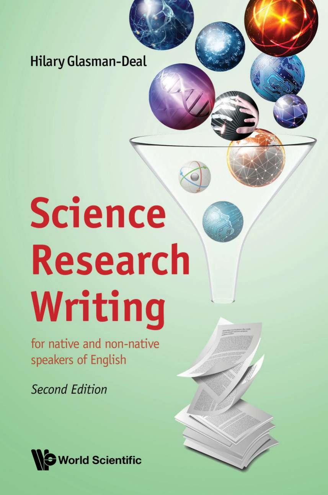

Science Research Writing: For Native and Non-Native Speakers of English
Hilary Glasman-Deal

1. How to Write the Introduction
1.1. The Structure and Content of the Introduction
1.2. Building a Model
1.3. Testing and Adjusting the Model
1.4. Useful Words and Phrases
1.5. Language and Writing Skills
1.6. Writing the Introduction
2. How to Write about Methods
2.1. The Structure and Content of the Methods Section
2.2. Building a Model
2.3. Testing and Adjusting the Model
2.4. Useful Words and Phrases
2.5. Language and Writing Skills
2.6. Writing a Methods Section
3. How to Write about Results
3.1. The Structure and Content of the Results
3.2. Building a Model
3.3. Testing and Adjusting the Model
3.4. Useful Words and Phrases
3.5. Language and Writing Skills: The Certainty Continuum
4. How to Write the Discussion
4.1. How to Write the Discussion
4.2. Building Your Own Model
4.3. Testing and Adjusting the Basic Generic Model
4.4. Useful Words and Phrases
4.5. Language and Writing Skills: Modal Verbs
4.6. Summary Discussion Exercise
5. How to Write the Conclusion
5.1. Building a Model
5.2. Testing and Adjusting the Model
5.3. Useful Words and Phrases
5.4. Language and Writing Skills
6. Writing the Abstract
6.1. Guidelines for the Abstract
6.2. Types of Abstract
6.3. A Generic Abstract Model
6.4. Language
6.5. Summary Abstract Exercise
7. Writing the Title
7.1. Check Average Length
7.2. Using Acronyms
7.3. Compare the Title Keywords to the Keyword List
7.4. Check the Grammar of the Title
7.5. Map and Model the Structural Content of the Titles in Target Articles
7.6. Check that Expectations that the Title Suggests Are Fulfilled in the Paper
8. Checklist and Tips
8.1. Organising the Information
8.2. Creating Sentences
8.3. Grammar and Vocabulary
8.4. General
Back to Home